Los débitos comandados permitirán a su empresa contar con una solución eficiente a la gestión de cobros, con mayor comodidad y seguridad dando la posibilidad de abarcar una amplia cartera de clientes.
Con este servicio, se podrán reducir los tiempos y costos operativos de su empresa. Los débitos serán realizados automáticamente de las cuentas de clientes que nos sea detallado, y los montos serán acreditados a la cuenta de su empresa el mismo día.
Ventajas del Servicio:
1️⃣ Seguridad y rapidez.
2️⃣ Mayor comodidad, ya que podes realizar operaciones bancarias para tu empresa desde donde estés.
3️⃣ Disponibilidad de comprobantes de pagos en línea.
Pago a Proveedores (Acceso)
Para acceder a la opción Pago de servicios , se debe ingresar a la plataforma de Pagos Electrónicos desde la página https://www.itau.com.py/
Ingresando el número de RUC de la empresa con el guion, el número de documento y la contraseña operador.
Una vez que se haya ingresado, se podrá visualizar la opcion pago de servicios en el menú.
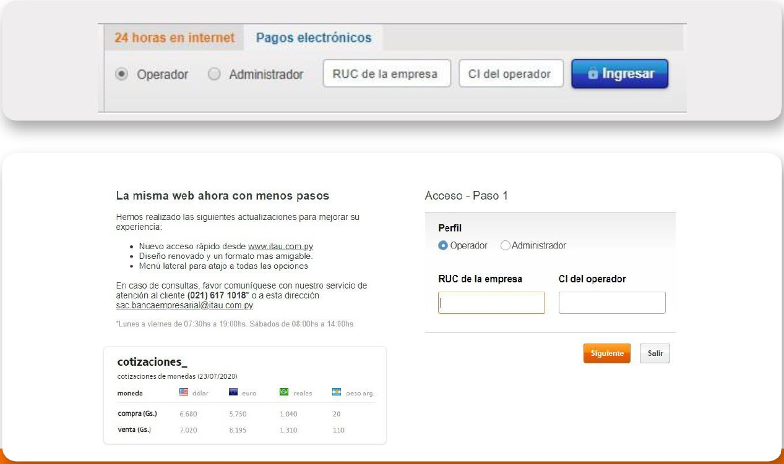
Pago de servicios Opciones del menú principal
Cargar pagos: permite cargar instrucción de los servicios a pagar de manera individual.
Autorizar pagos: permite autorizar los pagos cargados de manera individual por los usuarios con permisos para autorizar.
Anular pagos: se podrán anular los pagos ya cargados que se encuentren pendientes de autorización.
Datos de pagos por fecha: permite poder sacar reportes con detalle de los pagos realizados.
Comprobantes: permite poder sacar los comprobantes con detalle de los pagos realizados.
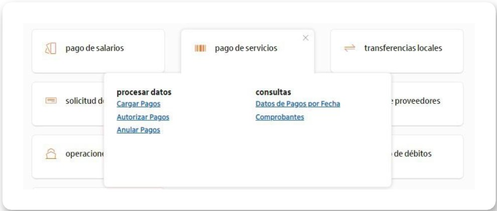
Pago de Servicios Publicos y Privados
Cargar Pagos: Seleccione el rubro del servicio a abonar, o utilice el buscador para ingresar al servicio requerido
Ejemplo: Al seleccionar Servicios Públicos, le despliega todos los servicios públicos habilitados para el pago
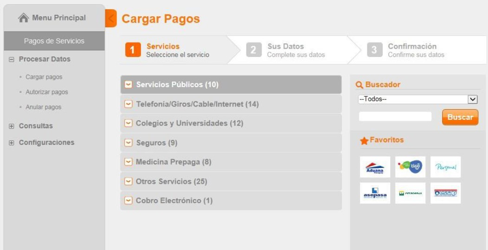
Filtros
Encontrará varias categorías que podrá desplegar y también cuenta con un buscador para buscar el servicio de su preferencia.
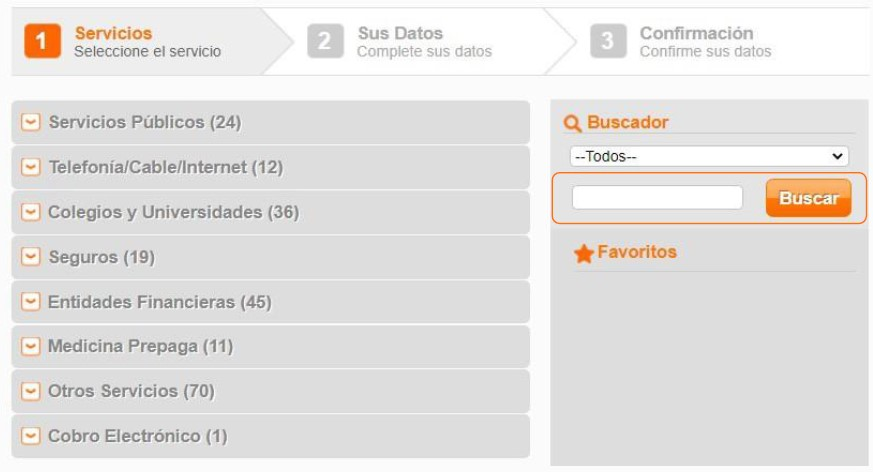
Cargar Pagos de Servicios Públicos o Privados
Ingrese los datos requeridos en el formulario electrónico.
Seleccione la cuenta de debito.
Click en el botón siguiente.
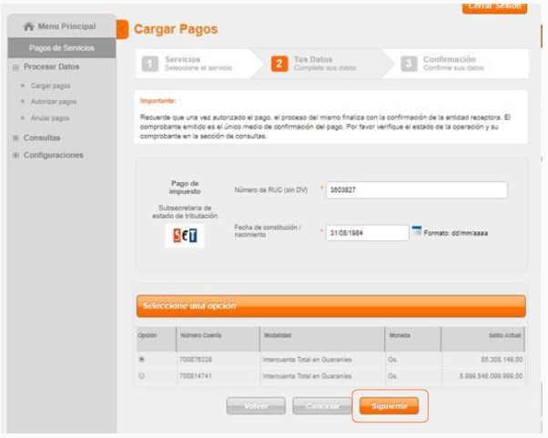
Seleccione o ingrese los datos requeridos según el servicio a abonar.
Click en el botón "Siguiente"
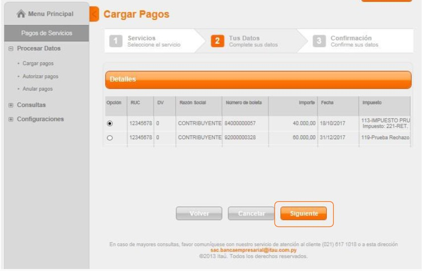
Confirme la solicitud de Carga
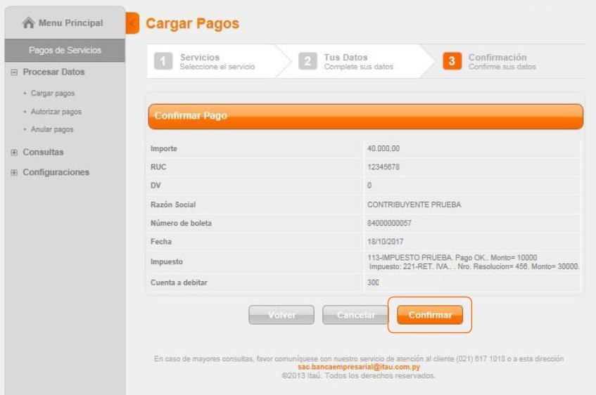
Visualice el mensaje de confirmación de la Carga.
El pago registrado queda Pendiente de autorización por los usuarios con el permiso correspondiente para liberar el pagos.
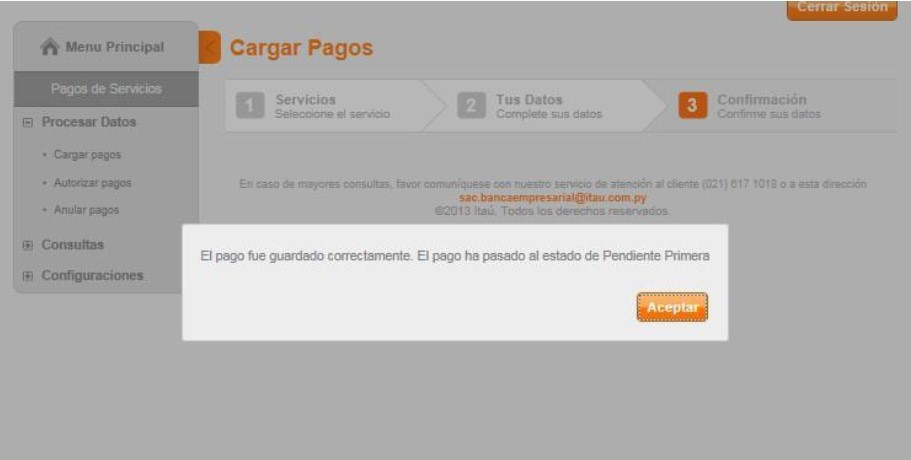
Pago de Servicios - Autorizar Pagos
Se deberá seleccionar los servicios que desea autorizar e ingresar el pin operador.
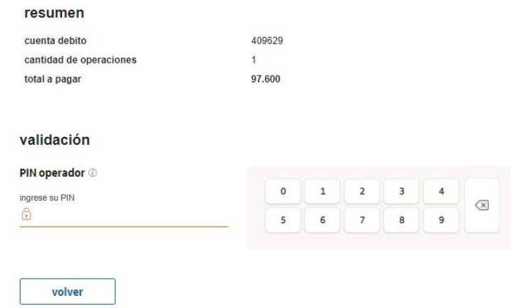
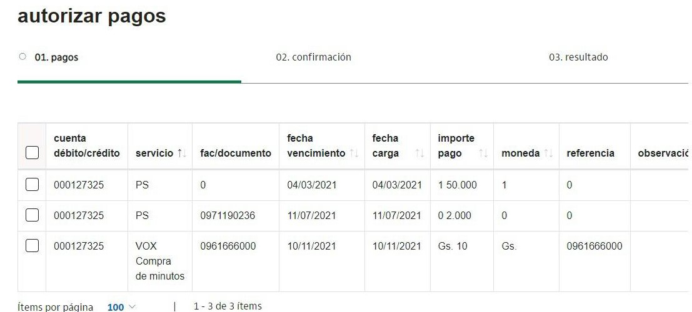
Pago de Servicios - Anular Pagos
Permite anular las operaciones de débitos cargados.
Para anular se debe seleccionar los archivos e ingresar el pin operador a modo que la operación quede en estado "Anulado"
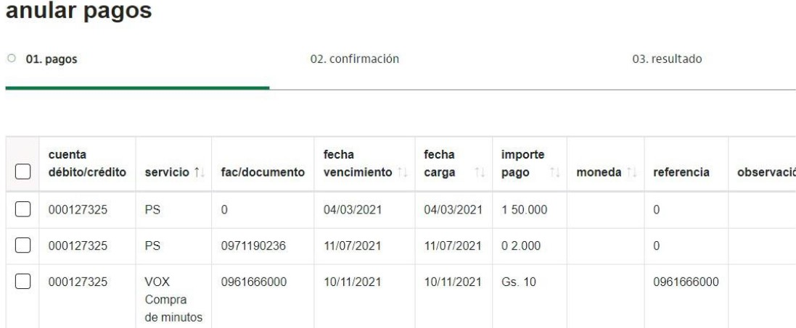
Pago de Servicios - Pago por Fecha
Datos de pagos por rango de fecha: para consultar el histórico de pagos con sus estados.
Se cuenta con la opción para descargar en formato excel.
Permite anular las operaciones de débitos cargados.
Ver: Le permite visualizar el detalle de auditoria de la operación, es decir, fecha y hora de la carga y/o autorizaciones con el detalle de los operadores.
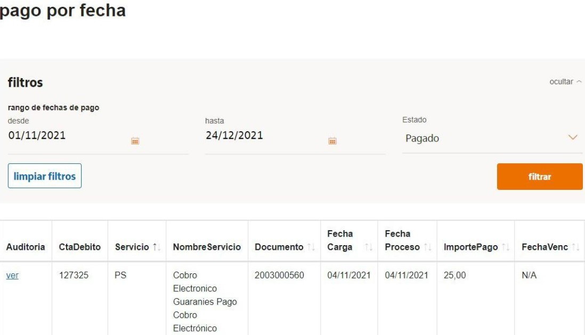
Consultas
(*)Auditoria de la operación: detalles de visualización.
(*) Nueva opción disponible.
OBS: El detalle de la carga, se visualizará para todas las operaciones registradas desde el 19/04.
Las operaciones anteriores a esta fecha, se mostrará únicamente el detalle de las autorizaciones
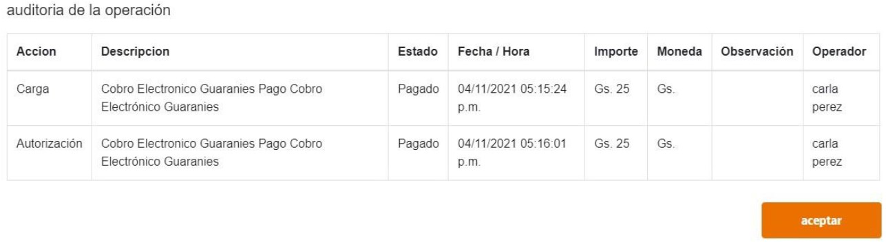
Comprobantes
Pantalla de consultas de comprobantes por rango de fechas.
Histórico de comprobantes disponible hasta 1 año atrás.